This training material is based on the below reference project:
Important !!!
Address is configurable
APROM Applicationstart / sizeAPROM Boot extensionbase address example:0x1E000These addresses are project-dependent and NOT fixed by hardware , adjust them according to:
- actual project application code size requirement
- actual project boot code feature size
The values used in this project
0x1E000,0x1DFFCare one validated reference only.
| Region | Address | Size | Purpose |
|---|---|---|---|
| APROM Application | 0x0000_0000 ~ 0x0001_DFFF |
0x1E000 |
app code |
| APROM checksum | 0x0001_DFFC |
4 bytes | app code checksum address (CRC32) |
| Boot code ext in APROM | 0x0001_E000 ~ 0x0001_FFFF |
8 KB | boot code extension |
| Boot code in LDROM | 0x0010_0000 ~ 0x0010_0FFF |
4 KB | boot code |
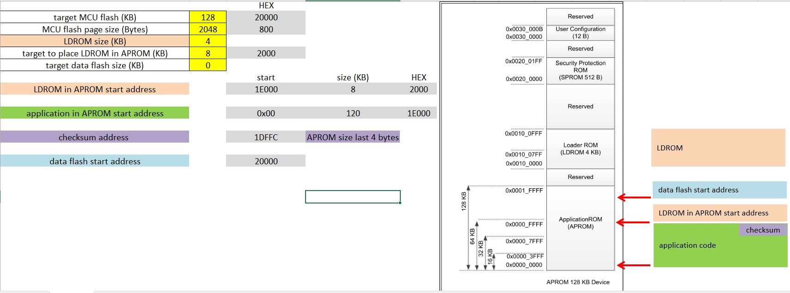
| UART | Function | Used in |
|---|---|---|
| UART0 PB12/PB13 | ISP protocol | Boot only , to upgrade app code |
| UART1 PA8/PA9 | printf / progress log | Boot + App |
main.c
└─ main
├─ SYS_Init
├─ ISP_Init
├─ ISP_check_app
└─ while1
└─ ISP_process
isp_config.c ← ★ Custom ISP state & policy
isp_user.c ← UART RX / CMD handler
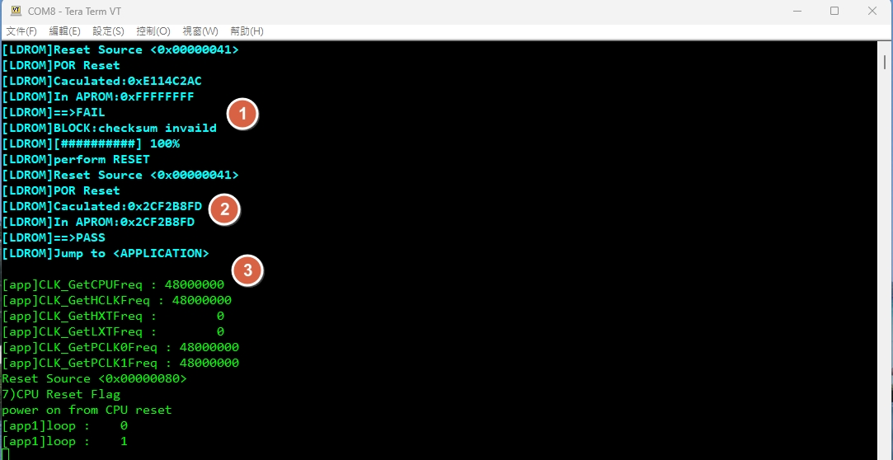
isp_user.c → packet handlingisp_config.c → CRC check / boot decision / ISP behavior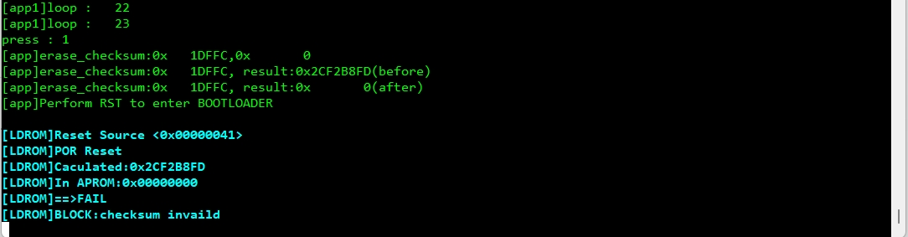
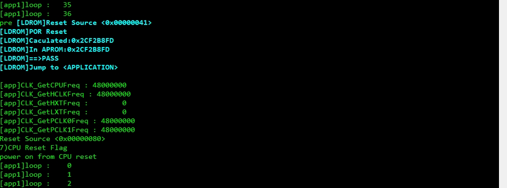
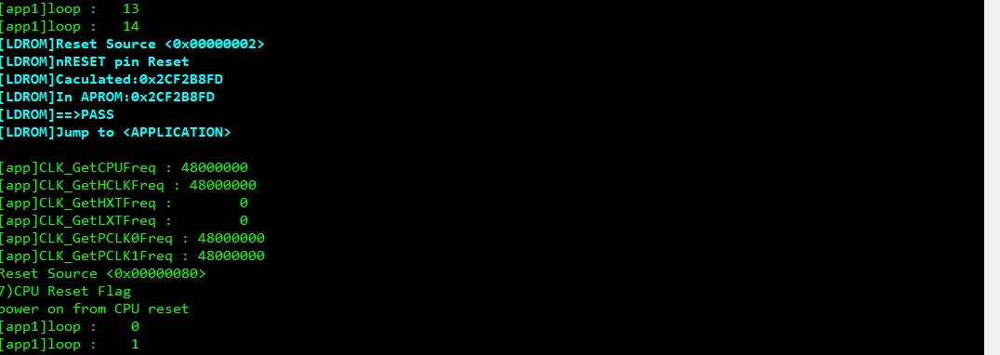
Boot code project uses a single scatter file: uart_iap.sct.
The linker layout for:
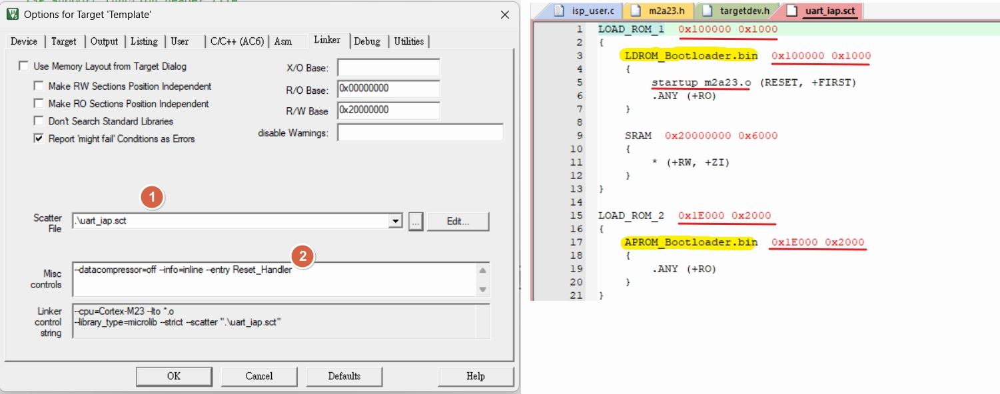
| Target | Output |
|---|---|
| LDROM_BOOT | LDROM_Bootloader.bin |
| APROM_BOOT_EXT | APROM_Bootloader.bin @ 0x1E000 |
LOAD_ROM_1 0x100000 0x1000
{
LDROM_Bootloader.bin 0x100000 0x1000
{
startup_m2a23.o (RESET, +FIRST)
.ANY (+RO)
}
SRAM 0x20000000 0x6000
{
* (+RW, +ZI)
}
}
LOAD_ROM_2 0x1E000 0x2000
{
APROM_Bootloader.bin 0x1E000 0x2000
{
.ANY (+RO)
}
}
0x0000_0000 ~ 0x0001_DFFB0x0001_DFFCLDROM_Bootloader.bin → LDROMAPROM_Bootloader.bin → APROM @ 0x1E000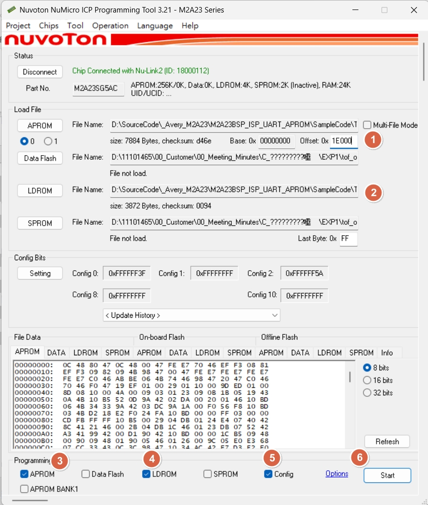
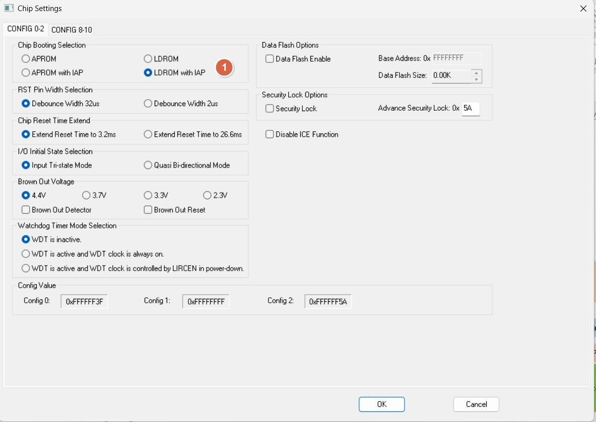
APROM_application.binAPROMReset and RunStart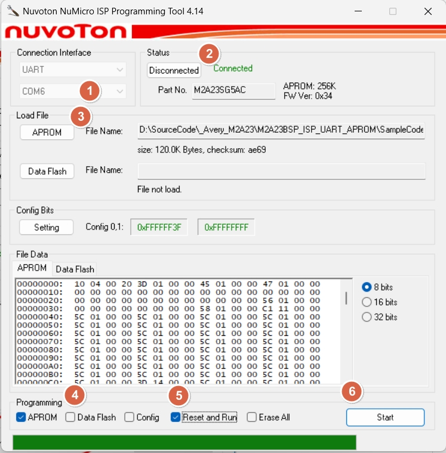
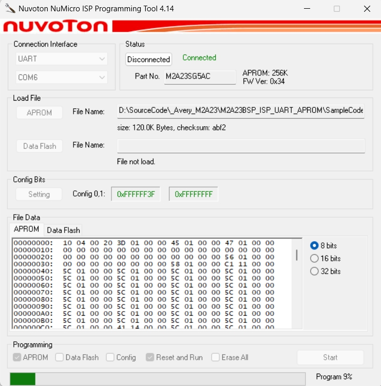
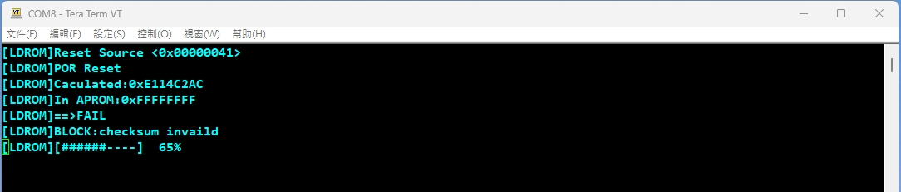
#define LDROM_DEBUG(format, args...) printf("\033[1;36m" "[LDROM]" format "\033[0m", ##args)
Progress bar width=10:
[LDROM] [#####-----] 50%
isp_config.c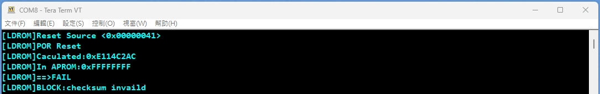
APP: 0x0000_0000 ~ 0x0001_DFFF 0x1E000 bytesLDROM ext in APROM: 0x0001_E000 ~ APROM_END boot extension, fixed addressLDROM: device LDROM region 4 KBLDROM_Bootloader.bin boot code stage-1APROM_Bootloader.bin boot code stage-2, linked at APROM@0x1E000refer to uart_iap.sct
APROM_application.bin app code linked at 0x0000_0000, size ≤ 0x1E000, includes CRC word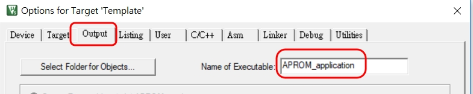
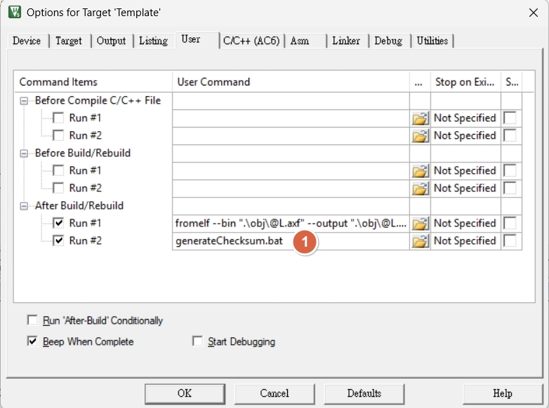
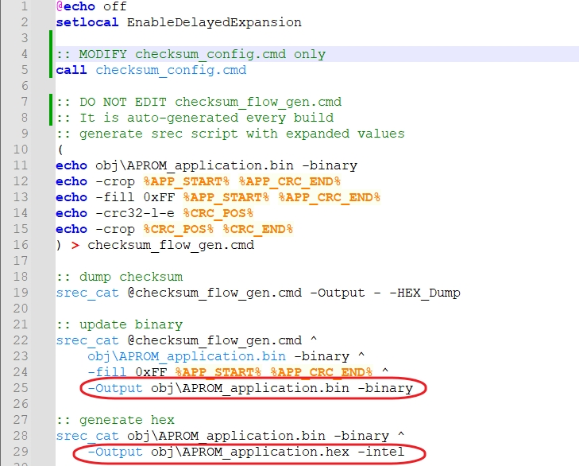
generateChecksum.bat
@echo off
setlocal EnableDelayedExpansion
:: MODIFY checksum_config.cmd only
:: Load application layout configuration
:: Used only during batch execution
call checksum_config.cmd
:: DO NOT EDIT checksum_flow_gen.cmd
:: It is auto-generated every build
:: generate srec script with expanded values
:: Generate srec_cat script with expanded numeric values
:: Avoids %VAR% expansion issues in srec_cat
(
echo obj\APROM_application.bin -binary
echo -crop %APP_START% %APP_CRC_END%
echo -fill 0xFF %APP_START% %APP_CRC_END%
echo -crc32-l-e %CRC_POS%
echo -crop %CRC_POS% %CRC_END%
) > checksum_flow_gen.cmd
:: dump checksum
:: Execute checksum calculation
:: Output result as HEX dump to console
:: Used for verification
srec_cat @checksum_flow_gen.cmd -Output - -HEX_Dump
:: update binary
:: Write calculated checksum back into binary
:: Produces final binary with embedded CRC
srec_cat @checksum_flow_gen.cmd ^
obj\APROM_application.bin -binary ^
-fill 0xFF %APP_START% %APP_CRC_END% ^
-Output obj\APROM_application.bin -binary
:: generate hex
:: Convert final binary into Intel HEX format
:: Used for programming or downstream tools
srec_cat obj\APROM_application.bin -binary ^
-Output obj\APROM_application.hex -intel
checksum_config.cmd (the only file need to modify)
:: ===== Application layout configuration =====
:: application start
set APP_START=0x0000
:: checksum calculate end (exclude checksum field)
set APP_CRC_END=0x1DFFC
:: checksum field start
set CRC_POS=0x1DFFC
:: checksum field size (CRC32 = 4 bytes)
set CRC_SIZE=0x0004
:: checksum field end
set CRC_END=0x1E000